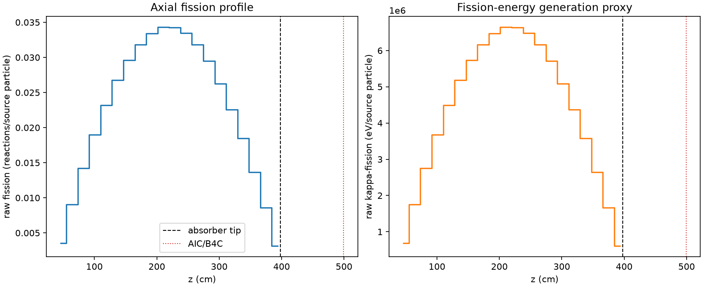
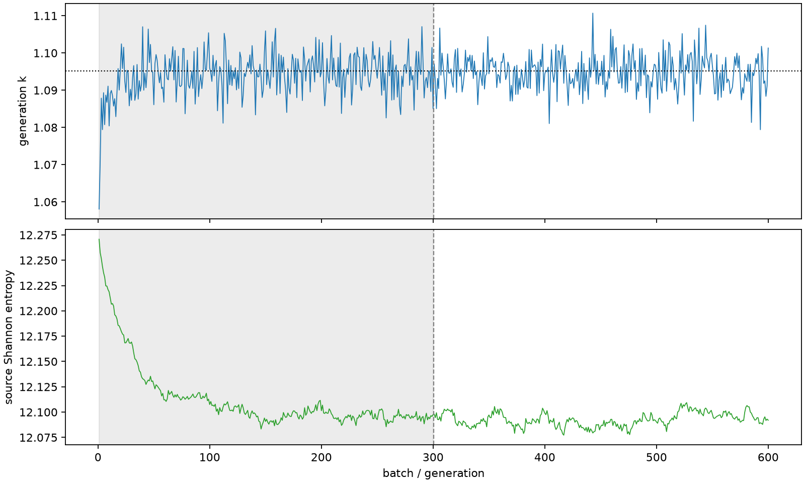

| field | value |
|---|---|
| experiment | V2-STAGE_128_OGRENCI_02-0002 |
| k | 1.0951463147643565 |
| MC standard error | 0.00017884080606349375 |
| seconds | 1274.8266492419998 |
| acceptance | not_assessed |
| convergence | review_required |
Completed is output integrity only; physical and statistical review required. Zero tallies do not prove zero production or zero uncertainty.
| diagnostic | value |
|---|---|
| geometric fuel voxels | 5280 |
| zero fission tally voxels | 0 |
| low signal fuel voxels | 0 |
| low signal fission share | 0.0 |
| low signal kappa share | 0.0 |
| important fission share | 0.950001095346314 |
| previous filter included | 5280 |
| duration estimate s | 1562.5173488400023 |
| actual minus estimate s | -287.69069959800254 |
| fission relative MC error | statistics |
|---|---|
| all_geometric_fuel | {"voxels": 5280, "positive_mean_voxels": 5280, "zero_mean_voxels": 0, "undefined_relative_error_voxels": 0, "median": 0.00967874471714208, "p95": 0.02563382815565102, "maximum": 0.03282818488487839} |
| low_signal | {"voxels": 0, "positive_mean_voxels": 0, "zero_mean_voxels": 0, "undefined_relative_error_voxels": 0, "median": null, "p95": null, "maximum": null} |
| important_95pct | {"voxels": 4280, "positive_mean_voxels": 4280, "zero_mean_voxels": 0, "undefined_relative_error_voxels": 0, "median": 0.009092208094691568, "p95": 0.013160736464084919, "maximum": 0.016693164427062396} |
| outside_previous_filter | {"voxels": 0, "positive_mean_voxels": 0, "zero_mean_voxels": 0, "undefined_relative_error_voxels": 0, "median": null, "p95": null, "maximum": null} |
| kappa_fission relative MC error | statistics |
|---|---|
| all_geometric_fuel | {"voxels": 5280, "positive_mean_voxels": 5280, "zero_mean_voxels": 0, "undefined_relative_error_voxels": 0, "median": 0.009665758678549321, "p95": 0.025601769547502703, "maximum": 0.03278353925727063} |
| low_signal | {"voxels": 0, "positive_mean_voxels": 0, "zero_mean_voxels": 0, "undefined_relative_error_voxels": 0, "median": null, "p95": null, "maximum": null} |
| important_95pct | {"voxels": 4280, "positive_mean_voxels": 4280, "zero_mean_voxels": 0, "undefined_relative_error_voxels": 0, "median": 0.009081396167189365, "p95": 0.013143803778422307, "maximum": 0.016670259626217602} |
| outside_previous_filter | {"voxels": 0, "positive_mean_voxels": 0, "zero_mean_voxels": 0, "undefined_relative_error_voxels": 0, "median": null, "p95": null, "maximum": null} |
| axial bin | fission share | kappa-fission share |
|---|---|---|
| 1 | 0.007946966100396217 | 0.007947371385477346 |
| 2 | 0.020242487613209115 | 0.02024258905260801 |
| 3 | 0.031886515184508815 | 0.031886509839023254 |
| 4 | 0.04245931366385726 | 0.042459224523259266 |
| 5 | 0.05194201150088248 | 0.05194188283673013 |
| 6 | 0.0599096411851678 | 0.05990954879048898 |
| 7 | 0.06630151012787062 | 0.06630136533196267 |
| 8 | 0.07129892653966004 | 0.07129893269217225 |
| 9 | 0.07478183083209007 | 0.07478208195702879 |
| 10 | 0.07678168176599386 | 0.07678172442323256 |
| 11 | 0.076659901068805 | 0.07665970662641125 |
| 12 | 0.07498732780313849 | 0.07498723869189612 |
| 13 | 0.07124027587142223 | 0.07124026664113135 |
| 14 | 0.06607772104847007 | 0.06607742381852176 |
| 15 | 0.05872667974673934 | 0.05872658686568007 |
| 16 | 0.05051407455246684 | 0.05051391194760339 |
| 17 | 0.04138655849131656 | 0.04138644918596133 |
| 18 | 0.030586098505839654 | 0.03058616001952667 |
| 19 | 0.0192270138673023 | 0.019226969601074013 |
| 20 | 0.007043464530863319 | 0.007044055770210795 |
Histories include the inactive-to-active transition at batch 300. kappa-fission approximates fission energy production, not total heat deposition.

